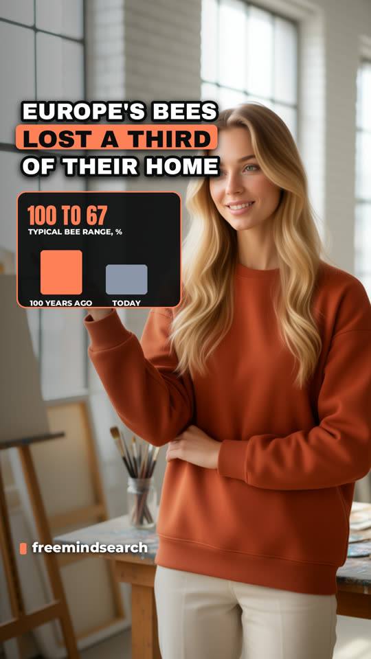

Story
Europe's bees lost a third of their range in 100 years
A new study in PNAS analysed more than four million records of bees and hoverflies over a century. The average bee species is about a third less widespread than it was, even though most species are still found. The pictures and charts are AI-assisted.
Watch on FacebookWatch on InstagramWatch on TikTokWatch on YouTube
Which worries you more, fewer bee species or fewer places for them to live?
Sources
- Phys.org, A century of records paints a worrying picture for Europe's bees: https://phys.org/news/2026-10-century-picture-europe-bees.html
- PNAS, Martinez-Nunez et al., 2026: https://doi.org/10.1073/pnas.2600774123
Made with AI: the presenter, voice and visuals are AI-generated. Every story is researched and fact-checked by a person, with its sources listed.